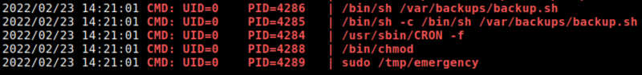
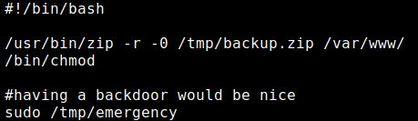

5.2 pspy2 – Unprivileged Linux Process Snooping
“pspy” is a command line tool designed to snoop on processes without need for root permissions. It allows you to see commands run by other users, cron jobs, etc. as they execute. Great for enumeration of Linux systems in CTFs. Also great to demonstrate your colleagues why passing secrets as arguments on the command line is a bad idea. More info here.
1. Download “pspy32” from here.
2. Upload the file from the Kali Machine to “/tmp”.
$scp pspy32 eric@192.168.12.41:/tmp
3. Go to SSH connection shell.
4. Change “pspy32” privileges.
eric@driftingblues:/$cd tmp
eric@driftingblues:/tmp$ chmod +x pspy32
eric@driftingblues:/tmp$ chmod +x pspy32
5. Run the script.
./pspy32
Output:

There is a backup script running every minute.
And there's also an “emergency” script.
6. Look at the “backup.sh” script.
eric@driftingblues:~$cat /var/backups/backup.sh
Output:

• The backup.zip file which we saw earlier in the “linpeas.sh” enumeration is a result of this script.
• The developer has included a backdoor in the script.